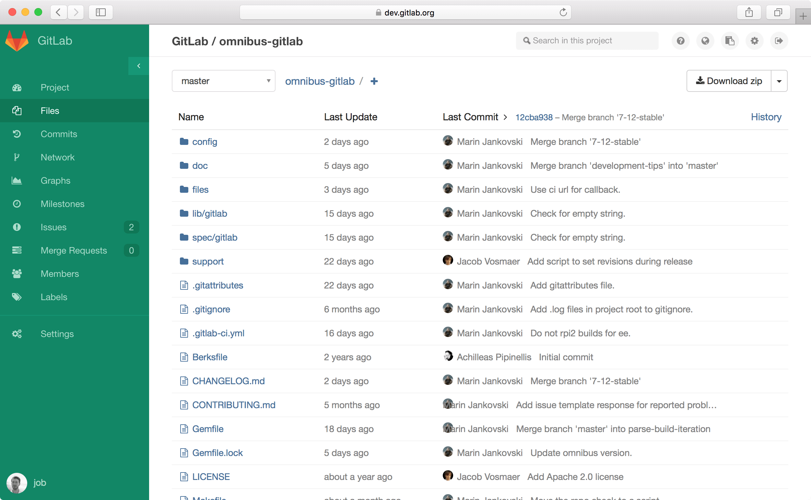
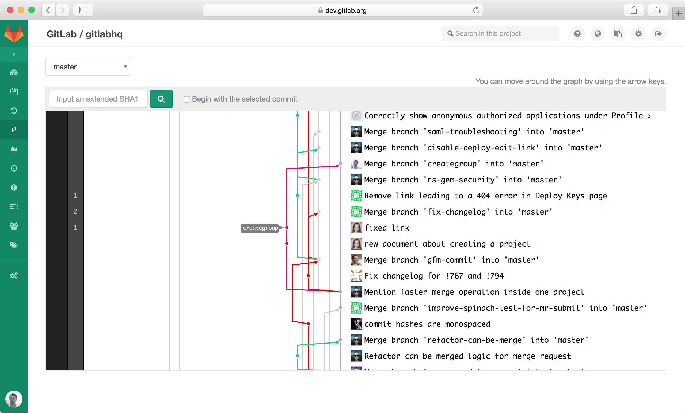
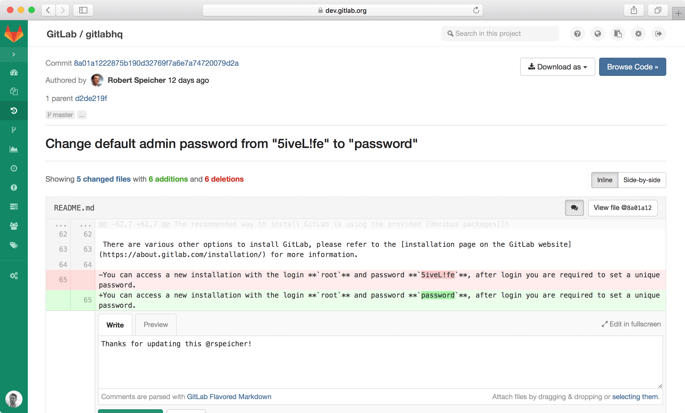
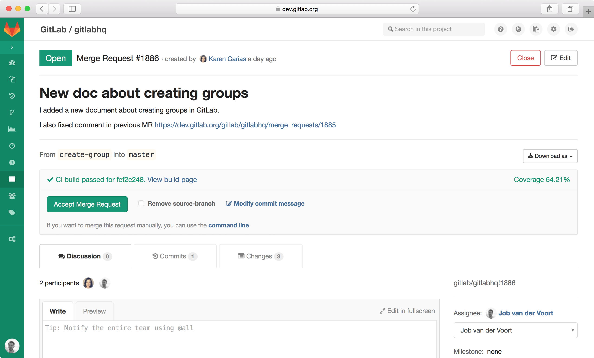
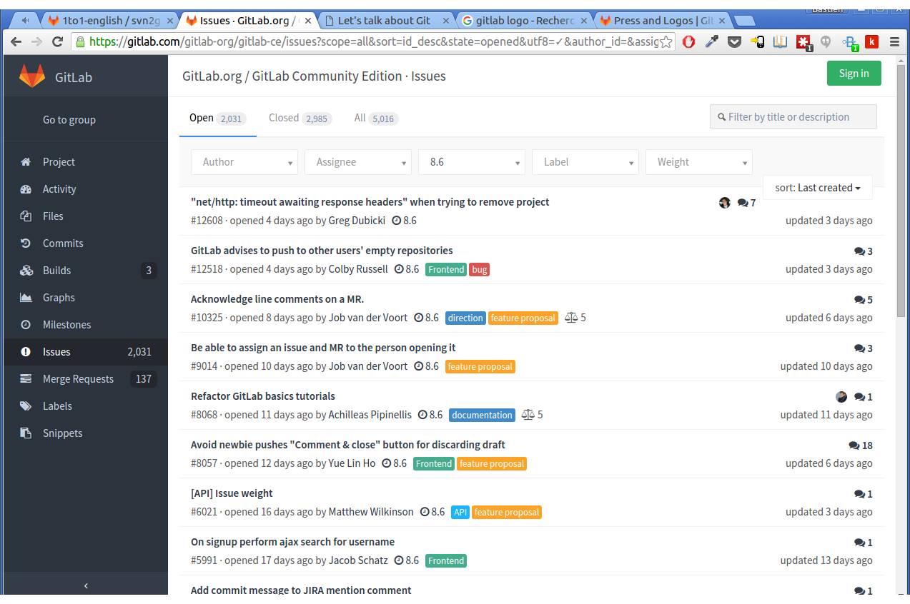

Let's talk about
Git

Salut vieille branche !
Y'a quoi au menu ?
- Git ≠ SVN
- Gitlab
- Git Flow
- Git Fow en pratique
Git ≠ SVN
Pourquoi changer un truc qui fonctionne ?
Git ≠ SVN
| Git | SVN |
|---|---|
| Workflow local | Workflow centralisé |
| Branching comme base du workflow | Branching non historisé |
| Gestion évoluée des droits | Gestion assez pauvre des droits |
Révision en hash SHA1 |
Révision incrémental |
| Nombreux workflows possibles | Workflow centralisé |
| Gestion avancée de l'historique | Impossible d'annuler un commit |
Multiples remotes |
Unique dépôt distant |
| Peu d'espace disque (1to1: 330Mo) | Tendance à l'obésité (?) |
Git ≠ SVN
Points forts de Git
- Les branches
- Le travail en local
- La staging area, les patches, etc.
- La vitesse des opérations
Git ≠ SVN
Git a été créé par Linus Torvalds
De nombreux projets passent à Git
Linux, Perl, Eclipse, Gnome, KDE, Ruby on Rails, Android, PostgreSQL, X.org, etc.
Gitlab

Et si GitHub lui-même était Open Source ?
Gitlab
Pourquoi Gitlab ?
- GitHub en version Open Source
- Maintenu par Gitlab Inc.
- De plus en plus d'utilisateurs et d'entreprises
- Mises à jour mensuelles
- Installation et maintenance facile
- Full featured
Gitlab
Fonctionnalités principales
- Activity feed, network, graphs
- Repo/file browser, file edition
- Wiki (+ markdown)
- Merge requests
- Issue tracker
- Code snippets
- Web Hooks
- Groupes de projets
- Gestion de droits
- Branches privées
- 2-factor authentification
- Gitlab Continuous Integration
Gitlab
Repository browsing
Gitlab
Network graph
Gitlab
File diff
Gitlab
Merge request
Gitlab
Issue tracker
